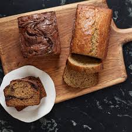

Preheat the oven to 375°F. Spray a 9 x 13-inch baking dish with vegetable oil.
Line a plate with paper towels. In a large skillet, cook the sausage over medium heat until browned, about five minutes, breaking it up with a side of a spoon. Use a slotted spoon to transfer the sausage to the paper towels. If there is very little oil left behind in the pan, add some olive oil. Sauté the onion until translucent, about five minutes. Stir in the hash brown potatoes and cook until the potatoes are tender, stirring occasionally, about eight minutes. Stir in the reserved a sausage. Remove the pan from heat.
In a large bowl, whisk together the eggs, cream, milk, garlic powder, paprika, sage, salt, and white pepper. Whisk in the Cheddar. Stir in the sausage/hash browns mixture.
Pour the mixture into the prepared baking dish.
Bake until the top is browned and the center is set, which is around 45 minutes.If the top becomes brown before the center is full cooked cover dish with foil.
Remove from the oven if wanted sprinkle the chives on top before serving.
The casserole is best served the day it is baked. Store the leftovers in a container that is covered in the refrigerator. Store it for no longer than two days.
Orange Scones
>
Preparation time: 25 minutes
Cook time: around 15 minutes
Cool time: 5 minutes
Rate this recipe
Ingredients
2 cups of all purpose flour, plus more for forming the scones
1 1/2 tsp baking powder
1 1/2 tsp of baking Soda
1/2 tsp of kosher salt
1 large egg
3/4 cup of sour cream
1/2 cup of sugar
1 tsp grated orange zest
12 tbsp of unsalted butter cut into 1-inch cubes and frozen
Maple-Orange Glaze Ingredients
1 1/2 cups of powder sugar
1 teaspoon of grated orange zest
3 tablespoon unsalted butter,that is melted
3 tablespoon of fresh orange juice
1 tsp of vanilla extract
1/2 tsp pure maple syrup
Instructions for Dough
Preheat the oven to 400 degrees F. Line a baking sheet with parchment paper.
In a large bowl, whisk together the flour, baking Soda, baking powder and salt. Set aside.
In a small bowl, lightly whisk the egg. Whisk in the sour cream. Set aside.
In another small bowl, place the sugar and orange zest. Using the back of a spoon , work the zest into the sugar until well combined. Stir the sugar mixture into the flour mixture. Add the frozen butter and, using your fingers or pastry blender, blend until the mixture is pebble like. Stir in the egg/sour cream mixture until the dough Forms a ball. Divide the dough in half.
Place one dough portion on a lightly floured surface and press it into a 6-inch round. (It should be about 1 inch think) Cut the round into 6 wedges. Arrange the wedges 1 inch apart on the prepared baking sheet. Repeat with the second dough portion.
Bake until golden, 13 to 15 minutes. Cool on the baking sheet for 5 minutes, then transfer the scones to a wire rack set on a baking sheet.
Instructions for glaze
n a medium bowl, stir together the powdered sugar and orange zest. Stir in the melted butter, orange juice, vanilla and maple syrup, mixing until smooth.
Spoon the glaze over the scones. Serve the scones warm or at room temperature. Once glazed,the scones are best eaten the same day. Store unglazed leftovers in an airtight container at room temperature for up to 3 days~
Banana Bread Recipe
>
Total time 1 hour and 30 minutes
Rate this recipe
Ingredients
1/2 cup unsalted butter, melted, plus more at room temperature for greasing the pans
3 cups all-purpose flour
2 teaspoons baking powder
1 1/2 teaspoons baking soda
1 1/2 teaspoons kosher salt
2 cups mashed ripe bananas
1 cup lightly packed brown sugar
1/2 cup whole milk
2 large eggs
2 teaspoons pure vanilla extract
1/4 cup chocolate-hazelnut spread, like Nutella
Instructions
Preheat the oven to 350°F / 175°C. Generously butter two 8 x 4-inch / 20 x 10 cm loaf pans, then line them with buttered parchment paper.
In a large bowl, whisk together the flour, baking powder, baking soda, and salt. In a separate bowl, combine the bananas, brown sugar, melted butter, milk, eggs, and vanilla extract and mix well with a wooden spoon.
Add the dry ingredients to the banana mixture and stir just until smooth.
Heat the chocolate-hazelnut spread in the microwave for about 20 seconds to soften, which makes it easier to swirl into the batter.
Pour half of the batter into one of the prepared pans and set aside for the plain loaf. Pour half of the remaining batter into the other prepared pan, then drizzle half of the chocolate-hazelnut spread over the batter.
Pour the remaining batter into the pan. Drizzle the remaining spread over the top and run a knife all the way through the batter in a zigzag pattern to distribute.
Bake until a tester comes out clean, about 50 minutes. Let the loaves cool in the pans for about 10 minutes, then remove from the pans and set on a wire rack to cool.
One 1-pound loaf hearty bread, cut into 1/2-inch-thick slices and toasted
Optional: Endive Leaves
Instructions
In a large bowl, combine the chicken, water chestnuts, toasted almonds, and chives (hold back a few almonds and chives for garnish). Toss to combine evenly, then set aside.
In a medium bowl, whisk together the mayonnaise, soy sauce, curry powder, garlic powder, salt, and white pepper. Pour over the chicken and stir until well combined.
Cover and refrigerate for 2 hours before serving. Sprinkle the chicken salad with the reserved almonds and chives and serve with toast and endive leaves (if using).
Store in a covered container in the refrigerator for up to 3 days.
Toasting Nuts & Sesame Seeds.
Toasting Nuts & Sesame Seeds:
Toast On The Stovetop
Place the nuts or seeds in a single layer in a dry skillet over medium heat and toast, stirring frequently, until lightly browned and fragrant, 4 to 8 minutes. Immediately transfer the nuts or seeds to a plate to cool.
Toast in the Oven:
Preheat the oven to 350°F. Spread the nuts or seeds on a rimmed baking sheet and toast in the oven, shaking the pan once or twice, until lightly browned and fragrant, 10 to 12 minutes. Immediately transfer the nuts or seeds to a plate to cool.
Grilled Havarti, Tomato & Basil Sandwiches
Preparation time: 10 minutes
Cook time: around 8 minutes
Cool time: 5 minutes
Rate this recipe
Ingredients
1/2 cup mayonnaise possibly hellmann's mayonnaise
8 slices french or country bread
8 slices havarti cheese
1 vine ripened tomato cut into 8 slices
1 bunch fresh basil torn
Instructions
Spread the mayonnaise on both sides of each slice of bread.
On 4 slices of bread, layer 1 slice of cheese, 2 tomato slices, basil leaves and another slice of cheese. Top each with remaining slices of bread.
Heat a large skillet over medium heat.
Toast the sandwiches until browned on both sides and cheese melted, 4 to 7 minutes.
Flip sandwiches halfway through.
Slice each sandwich in half and serve immediately.
Chicken Pesto Wraps
Total Time is 20 minutes
Rate this recipe
Ingredients
1/2 pound ground chicken
1 tablespoon canola oil
1/4 cup sun-dried tomato pesto
2 warmed flour tortillas around 8 inches
1/2 cup shredded part-skim mozzarella cheese
8 cut in half grape tomatoes
2 slices red onion sparated into rings
1 cup shredded lettuce
Instructions
In a big skillet, under a medium heat cook chicken in oil for about 5-6 minutes or until the chicken is no longer pink. Then drain the oil.
In a small bowl, combine the chicken and pesto. Spoon chicken mixture over each tortilla; layer with cheese, tomatoes, onion and lettuce; then roll up.
One 10.5-ounce can condensed cream of chicken soup
One 8-ounce container sour cream
4 cups shredded meat from 1 store-bought rotisserie chicken or Perfect Roast Chicken
One 4-ounce can diced green chiles
One 14-ounce bag grated mozzarella cheese (this is about 3 1/2 cups)
Ten 10-inch soft flour tortillas
1 vine-ripened tomato, cut into 1/4-inch dice
1/2 cup chopped fresh cilantro
1 lime, cut into wedges
Mexican Rice or two 5.4-ounce pouches Mexican rice mix, cooked, for serving like Korr.
Canned charro beans or your favorite seasoned beans, warmed, for serving
Instructions
Position an oven rack in the top third of the oven and preheat the oven to 350°F.
Spray a 9x13x3-inch (deep) baking dish with vegetable oil.
In a large bowl, whisk together the enchilada sauce, chicken soup, and sour cream.
Spread about 1/2 cup of the sauce in the baking dish.
Set aside the remaining sauce.
In a medium bowl, combine the chicken and chiles. Toss until well combined. Set aside.
Set aside about 2 cups of mozzarella for topping the dish. Put the rest in a medium bowl for ease.
Sprinkle some mozzarella on a tortilla, then add some of the shredded chicken and chiles.
Tightly roll up the tortilla and place it seam side down in the prepared pan. Continue with all of the tortillas, chicken, and mozzarella (except for what you’ve reserved for the top), putting the tortillas into the baking dish as they are filled. Push the others up against one another as necessary so that all the filled tortillas fit in a single layer.
Pour the remaining sauce over the filled tortillas. Bake for 20 minutes. Remove from the oven and sprinkle the reserved mozzarella on top. Bake until the cheese is melted, about 15 minutes.
Serve with chopped tomatoes, cilantro, and lime wedges. Also Mexican rice and warmed charro or any other beans.
Store leftovers in a covered container in the refrigerator for up to 4 days. Reheat in a 300°F oven.
Aloo Gobi
Preparation time: 20 minutes
Cook time: around 15 mins
Rate this recipe
Ingredients
1 head cauliflower, cut into 1-inch florets
3 potatoes, peeled and cut into 1-inch chunks
1 tablespoon olive oil
1 teaspoon cumin seeds
2 tomatoes, diced
1 onion, chopped
1 teaspoon salt
1 teaspoon curry powder
Instructions
Step 1
Place the cauliflower in a large, microwave-safe dish; cook in microwave on High for 3 minutes. Transfer the cauliflower to a bowl and set aside. Put the potatoes in the dish and cook in the microwave on High for 4 minutes. Pour into the bowl with the cauliflower.
Step 2
Heat the olive oil and cumin seeds in a large skillet over medium-high heat until the cumin swells and turns golden brown; stir the onions into the oil and cook about 3 minutes. Add the tomatoes and cook and stir another 3 minutes. Fold the cauliflower and potatoes into the mixture. Season with the curry powder and salt. Continue cooking until completely hot, 3 to 5 minutes. Serve hot.
Chole
Preparation time: 15 minutes
Cook time: around 1 hour
Rate this recipe
Ingredients
For pressure cooking
2 cups chickpeas raw, to be soaked overnight
2 bay leaves
5-6 green cardamom pods
1 inch cinnamon stick
4-5 black peppercorn
2 black tea bags for dark color of chole
1 teaspoon salt adjust to taste
5 cups water
For the Chole
1 – 1 & 1/2 tablespoons oil use any oil of choice
2 whole cloves
3/4 cup grated onions or very finely chopped
2 teaspoons ginger garlic paste
2 & 1/2 cups pureed tomatoes from 4 medium tomatoes
3 teaspoons chole masala homemade (recipe above) or store-bought
1/2 teaspoon red chili powder or to taste, use Kashmiri red chili powder for less heat
1/2 teaspoon paprika powder
3/4 teaspoon cumin powder
1/2 salt adjust to taste
For the garnish
1 tablespoon ghee
1 inch ginger cut into julienne
1/4 teaspoon garam masala
1/2 tablespoon crushed kasuri methi also known as dried fenugreek leaves
2 tablespoons cilantro chopped
Instructions
Soak 2 cups of raw chickpeas overnight (or for a minimum of 8 hours) in enough water to cover them. In the morning you should have around 5 cups of chickpeas (they increase in size overnight as they soak). Drain the water in which the chickpeas were soaked.
Then transfer the chickpeas to a stovetop pressure cooker and add the whole spices- bay leaves, green cardamom pods, cinnamon stick, and black peppercorns. Also add 2 black tea bags (for color), 5 cups water and 1 teaspoon salt.
Close the cooker and cook at high heat for 1 to 2 whistles. Then lower the heat to medium and let the chickpeas cook for another 10 minutes or so. Then remove the cooker from heat and let the pressure release naturally. If using an Instant pot, cook on high pressure for 20 minutes and let the pressure release naturally.
Once the pressure comes off, remove the tea bags and bay leaves using a pair of tongs. The tea bags are used for color only and don't have an impact on the taste of chole. Set this aside.
Heat 1 to 1 & 1/2 tablespoons of oil in a large kadai or pot on medium heat. Add 2 whole cloves and grated onions to the pot. Cook the onions until the raw smell goes away and they are light golden brown in color, this takes around 7 to 8 minutes.
Then add the ginger garlic paste and cook until the raw smell goes away, around 2 minutes.
Now, add the tomato puree and stir. Cover the pot and cook the tomatoes for around 15 minutes on medium-low heat, stir every 2 to 3 minutes in between. This step of cooking the tomatoes is important.
Once the tomatoes are done, add the spices- chole masala, red chili powder, paprika, cumin powder and 1/2 teaspoon salt. Stir and cook the spices for a minute or two.
Then add the boiled chickpeas, (along with the water in which they were boiled) to the pot and stir until the chickpeas are well combined with the masala. Add an extra 1/2 cup water here and then cover the pan and let the chole simmer on medium-low heat for 30 minutes. Simmering on how heat is what will give this chole so much flavor! Mash some of the chickpeas with the back of your spatula while they are simmering.
The gravy will thicken after 30 minutes, so if you prefer more gravy in your chole, add more water than what is mentioned in the recipe.
Then for the final step, heat 1 tablespoon of ghee in a small pan on medium heat. Once hot, add the ginger juliennes and fry until the juliennes are golden brown in color but do not burn them. Add the ginger juliennes to the chole, stir and switch off the heat.
Add garam masala, kasuri methi and chopped cilantro and serve the chole hot with rice, bhatura, parathas and more!